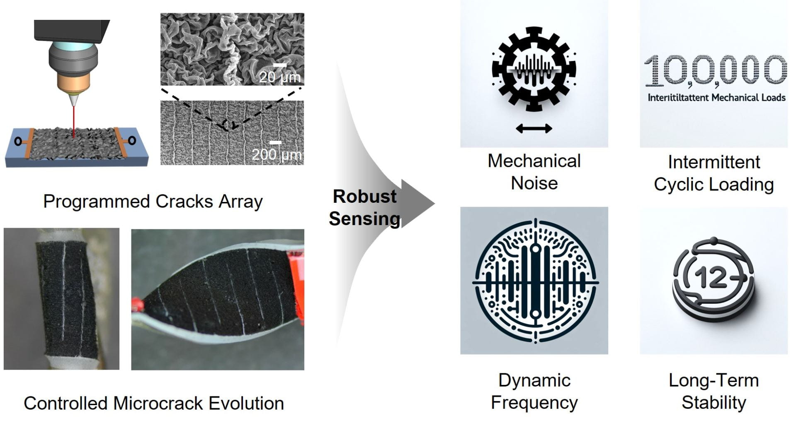

Soft Robot Sensing
Compliant strain sensors are crucial for soft robots to realize real-time sensing of various environmental stimuli as feedback to enhance robot perception and autonomy. However, the deformable nature of robot bodies and their dynamic actuation behaviors pose an urgent and challenging task in achieving predictive sensor manufacturing and long-term robustness for practical robot applications. Here, we focus on the development of accurate sensor modeling tools and well-controlled sensor dynamics.